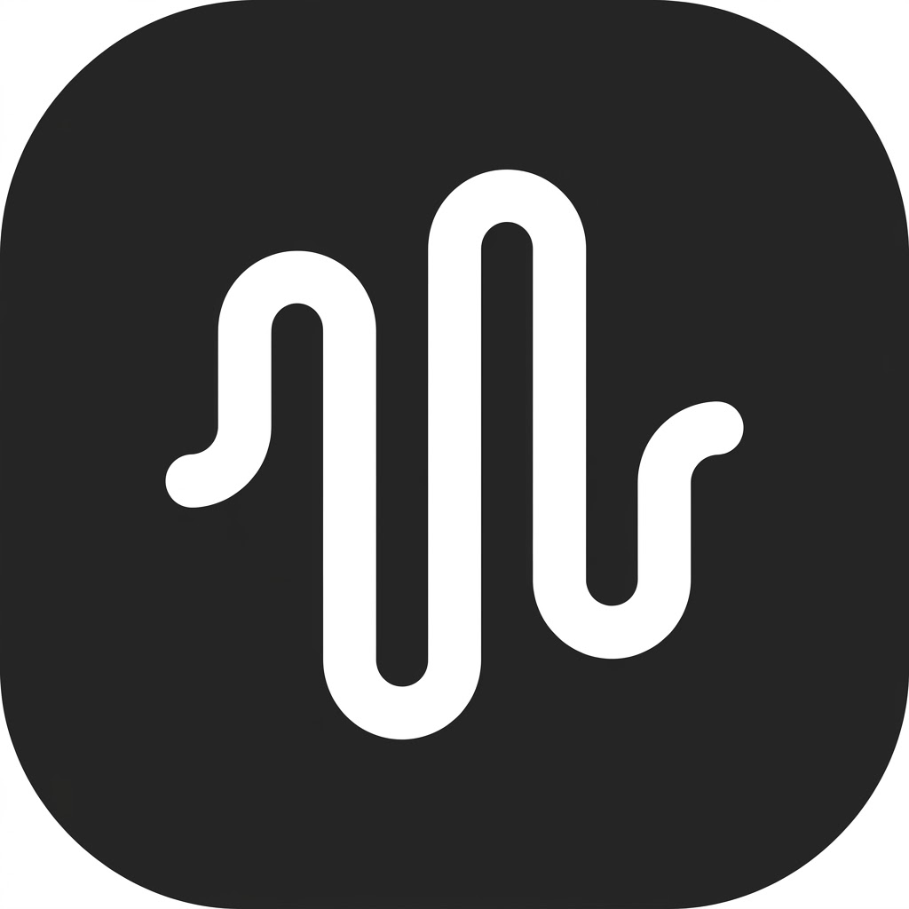

为每个应用创建独立持久化会话目录，隔离开本地其他环境。个人版仅支持单槽位单开，企业版支持多号多开。
为当前应用添加托管账号或启动独立隔离实例，不修改系统默认全局配置。
选择适合的授权或导入方式，凭据将由系统加密安全存储保管。
将先同步本机官方凭据与配置至当前选中账号，再按您的选择继续。
检测到 Antigravity 正在运行，确认后将自动优雅关闭旧窗口并切换至目标账号重启
定时后台静默刷新当前应用所有已绑定账号的额度与重置倒计时。
修改后主站会结束现有登录会话，需要重新登录。
切换至「自有网络」后，定途将断开专属安全线路并停止网络隔离保护，受管应用与容器将改为直接使用本机系统网络与本机环境。
这将导致应用失去专属固定出口与纯净环境隔离；若本机网络存在 IP 频繁变动、公共节点共享或地区/时区不一致，可能增加 AI 账号触发风控或封号的风险。
你的 AI 工具，一触即达。